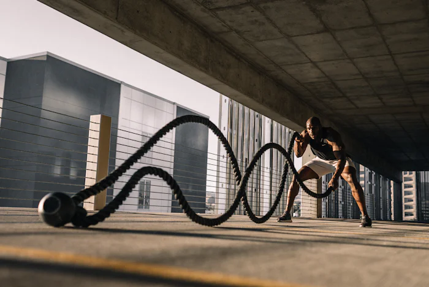

Training, recovery, nutrition and the real stories behind lasting progress.
Read latestA few realistic decisions can turn the gym from another task into the best part of your day.
Read storyLess noise, better habits. Explore practical advice that makes every session count.
Leave room for life, then protect your sessions.
Quality repetitions build better confidence.
Look for patterns, not just personal bests.
Results are not built in one heroic session. They are built in the quiet decision to return.
THE IRONCORE JOURNALHow a gradual plan changed I can't run into a finish-line smile.
A return to strength after a long break from routine.
Finding a training group that keeps every week fun.
Send us your training and nutrition questions. Our coaches answer the most useful ones every month.
Two to three full-body sessions each week is a strong place to begin.
Not necessarily, progress comes from good programming and recovery.